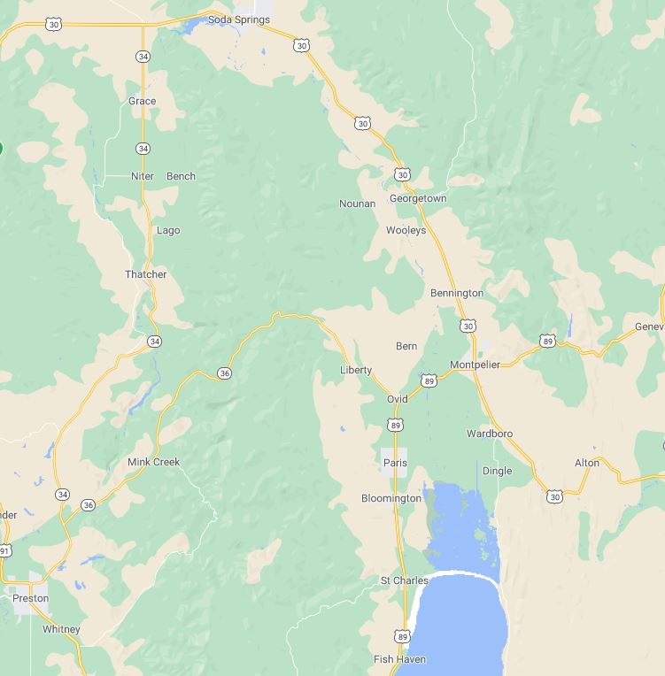

Preston Idaho

Weather Summary
- Currently:
- Current Temp:
- Wind Chill:
- Humidity:
- Wind Speed:
- °F
- °F
- %
- MPH
| 5 Day Forecast | ||||
|---|---|---|---|---|
Record temperatures affect farming
Temperature is a primary factor affecting the rate of plant development. Warmer temperatures expected with climate change and the potential for more extreme temperature events will impact plant productivity. Pollination is one of the most sensitive phenological stages to temperature extremes across all species and during this developmental stage temperature extremes would greatly affect production.
Few adaptation strategies are available to cope with temperature extremes at this developmental stage other than to select for plants which shed pollen during the cooler periods of the day or are indeterminate so flowering occurs over a longer period of the growing season.
Contact information



📍 1250 E 1200 N
Preston, ID
📞 208-520-4520